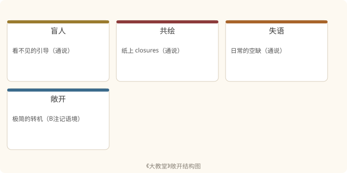

大教堂
一、基本信息
| 作者 | 雷蒙德·卡佛 |
|---|---|
| 成书/出版 | 1984年（作者页注记：Britannica——Cathedral (1984)） Raymond Carver — Encyclopaedia Britannica（百科全书） |
| 国别/地区 | 美国 |
| 时代 | 现当代 · 20世纪80年代初 |
| 体裁 | 短篇小说集 |
| 语言 | 英语 |

《大教堂》敞开结构图（主题·结构图）
二、创作背景
作者页注记：大教堂——'（Britannica：1984）'。
Britannica：卡佛——极简主义（minimalism）代表（作者页语境——待核）。
题材（通说待核）：普通人的失语与片刻的敞开——盲人与'大教堂'的共绘。
三、内容脉络
（通说待核）同名篇：'我'与盲人共绘大教堂。
（通说待核）中产失业者的黄昏。
四、主要人物表
| 人物 | 身份 | 说明 |
|---|---|---|
| '我' | 失语者 | （通说待核） |
| 盲人（罗伯特说） | 来访者 | （通说待核） |
五、主题与艺术特点
- 极简主义与'空缺'（作者页语境——通说待核）。
- 日常语流的转机（通说待核）。
- 观看与看见（书名语境——通说待核）。
六、影响与评论
- Britannica：Cathedral (1984)（作者页注记）。
Raymond Carver — Encyclopaedia Britannica（百科全书） - Britannica：卡佛'极简主义'定位（作者页语境——待核）。
Raymond Carver — Encyclopaedia Britannica（百科全书）
七、阅读建议
难点
- 极简句法的留白。
- 1980年代美国失业潮背景（通说待核）。
- 《大教堂》中译本（人民文学/南海等——通说待核）。
- 英文原版。
卡佛中期首选；与《当我们谈论爱情时我们在谈论什么》对读。
八、待核实
- 同名篇细节核对（通说）。
- 1984年出版（Knopf说）待核。
- '极简主义'标签的学术争议待核。
本页主要来源
雷蒙德·卡佛的其他收录作品：当我们谈论爱情时我们在谈论什么大教堂